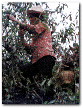
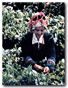
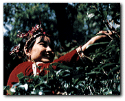
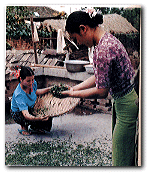
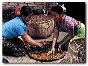

�鲰�─�觚�
�a於台�常�台�骋笆废�����清朝道光年，初�l�e人林�P池�母＝��Щ匚湟能�枝─�觚�植於�鲰�山，基於天�r、地利、人和，�叭怀��椴璧狞S金王��。
台���觚�是�觚�茶��中�l酵程度最重的一�N，���|�觚�的�u造，�r�~原料�����橐谎慷��~，著名的膨�L茶，�t�x用一芽一�~�樵�料。�觚�茶茶芽肥�眩�白毫�@，��色呈琥珀般的橙�t色，在���H市�霰蛔u�椤跋����觚�”、“�|方美人”，以��其殊香美色。�榍嗖桀�代表。
��南─普洱
普洱茶原�a於��南省，生�a�v史悠久，南宋李石《�m博物�I》���d，西藩用普茶已自唐朝。清代普洱府即�F代普洱�h周��所�a茶�~�\至普洱府集中加工再�\�N，蒙、康、藏各地普洱茶因此得名。
普洱茶是用��良��南大�~�N，�衿漉r�~�⑶噌崛嗄怼��袂�的�袂嗖��樵�料，���a堆的特殊加工�u成，�l索粗�逊蚀螅�色������或褐�t，滋味醇厚回甘，�K具��特��香。普洱茶，被�J�槭且环N具有保健功效的��料。���t�W�R床�����C明，普洱茶具有降低血脂、�p肥、抑菌、助消化、暖胃、生津、止渴、醒酒、解毒等多�N功效。�[牧民族主食肉��，俗�V“可三日�o�Z，不可一日�o茶”，可��普洱茶��降低血脂自古即有明�C。普洱茶�楹诓桀�之代表。
武夷─大�t袍
武夷山素有“奇秀甲於�|南”之�u，自古以�砭褪沁[�[�俚亍Ｎ湟纳剿�以蜚��中外，不
�H它的�L光秀��，��在它盛�a“武 夷 岩 茶”岩茶之�l，“奇 �N”、“�� �N“、“名 �病备骶咛厣�，名�彩茄也柚�王。�@些名�仓�中又以四大名�玻捍蠹t袍、�F�_�h、白�u冠、水金��最�槊��F，又以大�t袍享有最高���u，可�^�觚�茶中的“茶中之�}”�F在�[客在
武夷山�[�[，啜��名���O品，��略范仲俺��云：不如仙山一啜好，冷然使欲乘�L�w之意境。
安溪─�F�^音
 �F�^音原�a於福建安溪�h，安溪�F�^音�u作�乐�，技��精巧。一年分四季�裱u，�e雨至立夏�榇翰瑁��a量�兹�年的一半，品�|最好。安溪�F�^音的�u造工��要���^�銮唷��袂唷��銮唷⒆銮唷⒊辞唷⑷嗄怼⒊醣骸��捅骸��桶�揉、文火慢烤、��簸等工序才�u成。�F�^音的品��，目前在福建泉州�B�T、漳州以及�B�T、潮汕一�Ш团_�常�仍沿�u�鹘y的功夫茶品��方式。陶�刂貌瑁��_以沸水此�r即有一股殊香�浔嵌��恚�正是未��甘露味，先���}妙香，有朋自�h方�恚���以功夫茶，�_是一�N表示敬重客人的生活���g。
�F�^音原�a於福建安溪�h，安溪�F�^音�u作�乐�，技��精巧。一年分四季�裱u，�e雨至立夏�榇翰瑁��a量�兹�年的一半，品�|最好。安溪�F�^音的�u造工��要���^�銮唷��袂唷��銮唷⒆銮唷⒊辞唷⑷嗄怼⒊醣骸��捅骸��桶�揉、文火慢烤、��簸等工序才�u成。�F�^音的品��，目前在福建泉州�B�T、漳州以及�B�T、潮汕一�Ш团_�常�仍沿�u�鹘y的功夫茶品��方式。陶�刂貌瑁��_以沸水此�r即有一股殊香�浔嵌��恚�正是未��甘露味，先���}妙香，有朋自�h方�恚���以功夫茶，�_是一�N表示敬重客人的生活���g。
洞庭─碧螺春
洞庭碧螺春，是中��名茶珍品，以“形美、色�G、香�狻⑽洞肌彼慕^��名中外，碧螺春�a於江�K省太湖洞庭山，洞庭分�|、西�缮剑��夂��睾停�空������，土壤呈微酸性，�O�m茶�渖��L。洞庭碧螺春�a�^，是我��著名的茶、果�g作�^，茶�浜吞摇⒗睢⑿印⒚贰⒔邸�白果、石榴等果木交�e�N植。茶�洹⒐��渲��肯噙B，根�}相通，茶吸果香，花�a茶味，陶冶著碧螺春茶果味的天然品�|。碧螺春�裱u技��高超，�裾�有三大特�c，一是摘得早，二是�竦媚郏�三是��得�Q。�~形卷如雀舌，500
公克高��碧螺春�s需�� 6.8～7.4�f�w芽�^，可��茶�~之幼嫩，摘�窆Ψ蚪^非一般。品��碧螺春�H有情趣，�癫ＡП�用 70° ～ 80° �_水�_泡置茶，��碧螺春投入杯中，茶即沈底，瞬�g白��翻�L，雪花�w舞，清香�u人，碧清、香�d、回甘、�F如珍，宛如高��工��品，�榫G茶典型代表。
�{峰─��井
西湖之泉，以虎跑�樽睿��缮街�茶，以��井�榧选！盎⑴芩�，��井茶”�槁�名中外杭州西湖的�p�^。��井茶�裱u技�g考究。�裾�有三大特�c，一早、二嫩、三勤。茶�r常�f：早�袢�天是��，�t�袢�天是草，通常以清明前�裱u�樽罴雪しQ明前茶，杭州��井茶可分三品��，�{峰��井，梅�]��井，西湖��井。�{峰��井香�飧咪J而持久滋味�r醇色�陕渣S，�槿�品��中品�|最佳，品����井多用玻璃杯或�w杯水��85℃�_泡，��色碧�G明亮，香馥如�m，滋味甘醇�r爽，向有“色�G、香�d、味醇、形美”四�^之�u。
太�O─翠螺
太�O翠螺，因外形�郧�似螺，
色�删G翠而得名，�榻��K省之 名茶。翠螺�侔牒孓够ú瑁��� 摘���室谎恳蝗~，分��收、�� 青、揉捻、烘乾再揉捻、炒乾 再烘乾七道工序，再以四至五
�~嫩芽以手工勾�猿芍椋�再配 以七道高雅天然花香薰�u，入 口�M口生津，香�馑囊纾���久 耐泡，�^酌香、二酌�狻⑷�酌 味不�p、四酌味�q存。品�|特�c是�l索�o���郧�，茸毫
披露，色�纱渚G，香�馇甯撸�滋味�夂瘢���色�G而明亮 ，以�_水80℃�_泡，味香持久、耐泡。�榻�代新品�G茶。
 君山─白毫
君山─白毫
君山�楹�南省洞庭湖中一��小 �u，春夏湖水蒸�l，���F��漫 ，生�B�h境最�m�N茶。君山白 毫偌�Q白毛猴，�裾�於清明前 三天，直接�牟��渖����裱款^
，�榉乐共���芽�^和茸毛，盛 茶�{�纫r有白布。因品�N��良 ，���阎ο。�芽�^肥�阎���， 每斤茶�s二�f五仟��芽�^，君 山白毫，�L格��特，�q�a不多，�|量超群，�槲���名��
茶之佼佼者。用���Q透明的玻璃杯�_泡�r，可以看到初 始芽尖朝上，蒂�^下垂，而���Q於水面，�S後����降落 �粤㈧侗�底，忽升忽降蔚�槿び^，最多可�_三次，故君
山白毫有“三起三落”之�Q，�僦���白茶之代表。
峨嵋─珠茶
珠茶─亦�Q�A茶，原�a浙江省
平水茶�^，浙江平水�a茶，�v 史已很悠久，�h在一千多年前 ，平水茶�^包括浙江省、�B�d 、嵊�h、��山、�T暨、天台、 奉化等十�N�h市，境�壬��X�P
�Y，峰密起伏，���F���@，溪 流�v�M，�夂��睾停��m于茶�~ 生�a。珠茶是中��最早出口的 商品之一，18世�o珠茶以“�� 熙茶”�L靡世界茶��，且售�r甚高，茶�r之高不��於珠
��，曾被�u��"�G色珍珠"。
 祁�T─工夫�t茶
祁�T─工夫�t茶
祁�T工夫�t茶，是我���鹘y工夫�t 茶的珍品，有百�N年生�a�v史。祁 �t以外形苗秀、色有��先和香���� �d著�Q，在���韧庀碛惺⒆u。��外 把祁�t�c印度大吉�X茶、斯里�m卡
�醴サ募竟�茶，�K列�槭澜绻��J的 三大高香茶。 主�N�W洲，清��更能�I略祁�T�t茶 的特殊香味，加奶後乳色粉�t，其 香味特�c�q存，因而�A得���H市��
最高�u�r，1915年巴拿�R展�[��曾 �@金�|��，祁�t更被列�橹���的��事�Y茶，於�W洲是 下午茶的珍品，�F作珍物��送�H友，以�@示身份高�F 不凡。是中���t茶之代表。